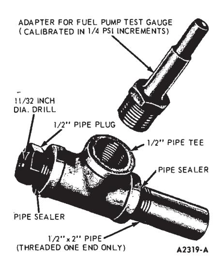
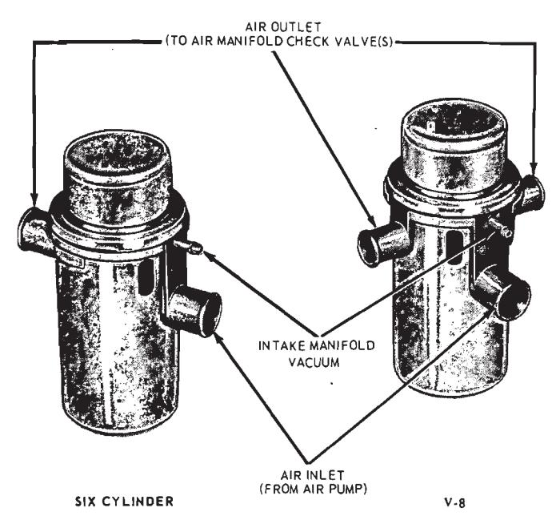
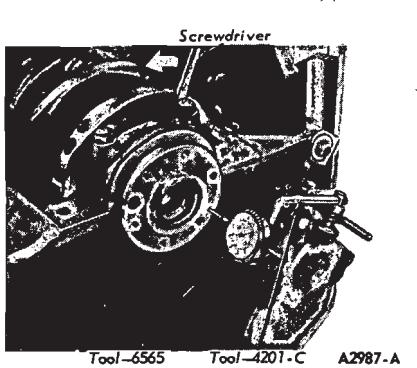
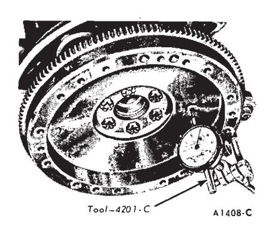
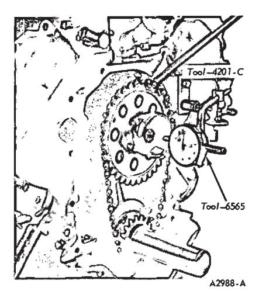
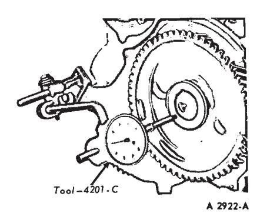
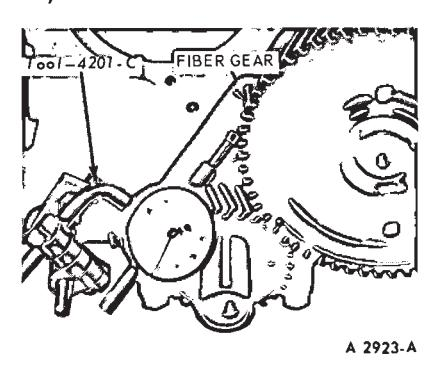
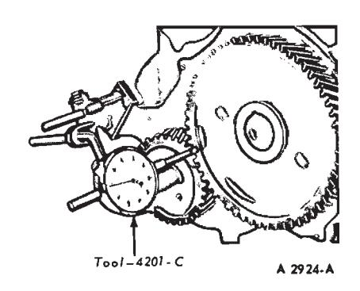
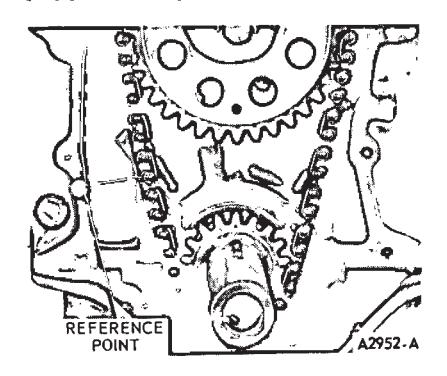

General Engine Service · 21-01-05
The following procedures are recommended for checking and/or verifying that the various components of the Thermactor exhaust emission control system are operating properly. The engine and all components must be at normal operating temperatures when the tests are performed.
Prior to performing any extensive test or diagnosis of the Thermactor system, verify that the problem exists, then it must be determined that the engine as a unit is functioning properly. Disconnect the air bypass valve vacuum sensing line at the intake manifold. Plug the manifold connection to preclude leakage. Normal engine diagnosis procedures can then be performed.
Air Supply Pump Test
-
Assemble a test gauge adapter as shown in Fig. 10), and install a fuel pump test gauge on the adapter. The test gauge used must be accurate and readable in 1/4 psi increments.
-
Operate the engine until it reaches normal operating temperature.
-
Inspect all hoses and hose connections for leaks and correct as necessary before checking the air supply pump.
-
Check the air pump belt tension and adjust to specifications.
-
Disconnect the air supply hose(s) at the air manifold check valve(s). If there are two check valves, close off one hose by inserting a suitable plug in the end of the hose. Use a hose clamp and secure the plug so it will not blow out.
-
Insert the open pipe end of the test gauge adapter in the other air supply hose. Clamp the hose securely to the adapter to prevent it from blowing out.
Position the adapter and test gauge so that the air blast emitted through the drilled pipe plug will be harmlessly dissipated.
-
Install a tachometer on the engine. Start the engine and slowly increase the engine speed to 1500 rpm. Observe the pressure produced at the test gauge. The air pressure should be one (1) psi or more.
-
If the air pressure does not meet or surpass the above pressure, disconnect and plug the air supply hose to the air bypass valve. Clamp the plug in place, and repeat the pressure test.
- If the air pump pressure still doesn’t meet the minimum requirements, install a new air pump and repeat the pump test. Replace the air pump as determined by the result of this test.
Check Valve Test
This test can be performed at the same time as the Air Pump Test.
-
Operate the engine until it reaches normal operating temperature.
-
Inspect all hoses and hose connections for obvious leaks and correct as necessary before checking the check valve operation.
-
Disconnect the air supply hose(s) at the check valve(s).
-
Visually inspect the position of the valve plate inside the valve body. It should be positioned lightly against the valve seat away from the air manifold.
-
Insert a probe into the hose connection on the check valve and depress the valve plate. It should freely return to the original position, against the valve seat, when released.
If equipped with two check valve assemblies, check both valves for free operation.
-
Leave the hose(s) disconnected and start the engine. Slowly increase the engine speed to 1500 rpm and watch for exhaust gas leakage at the check valve(s). There should not be any exhaust leakage. The valve may flutter or vibrate at idle speeds, but this is normal due to the exhaust pulsations in the manifold.
-
If the check valve(s) does not meet the recommended conditions (steps 4, 5 and 6), replace it.
Air Bypass Valve Functional Test
Determine if the air bypass valve (Fig. 11) is functioning properly by performing the following operation(s):
-
Remove the air bypass valve to air manifold check valve hose at the bypass valve hose connection.

Fig. 10 — Air Supply Pump Test Gauge Adapter -
With the transmission in neutral and the parking brake ON, start the engine and operate at normal engine idle speed. Verify that air is flowing from the air bypass valve hose connection. Air pressure should be noted as this is the normal delivery flow to the air manifold(s).
-
Momentarily (approximately 5 seconds) pinch off the vacuum hose to the bypass valve to duplicate the air bypass cycle.
-
Release the pinched vacuum hose. Air flow through the air bypass valve should diminish or stop for a short period of time. The length of time required to resume normal flow cannot be specified since the time interval is dependent on engine vacuum and length of time the vacuum line is pinched off.
Diaphragm Leakage Check
Evaluate the bypass valve for diaphragm leakage by performing the following check:
-
Remove the vacuum supply hose from the air bypass valve at the bypass valve connection.
-
Insert a tee connection in the vacuum supply hose. Connect a vacuum gauge to one of the remaining hose connections on the tee, insert a short length of hose (approximately 3 inches) on the remaining connection. Insert a suitable plug in the open end of the short length of hose.
-
Start the engine and note the vacuum gauge reading.
-
Remove the plug from the short length of hose and connect to the air bypass valve vacuum connection. Ob- serve vacuum gauge reading. If the indicated vacuum readi 2 does not correspond with the previous reading after approximately 60 seconds, replace the air bypass valve.

Fig. 11 — Thermactor Air Bypass Valves
Fig. 12 — Checking Crankshaft End Play
Crankshaft End Play
-
Force the crankshaft toward the rear of the engine.
-
Install a dial indicator so that the contact point rests against the crankshaft flange and the indicator axis is parallel to the crankshaft axis (Fig. 12).
-
Zero the dial indicator. Push the crankshaft forward and note the reading on the dial.
-
If the end play exceeds the wear limit, replace the thrust bearing. If the end play is less than the minimum limit inspect the thrust bearing faces for scratches, burrs, nicks, or dirt. If the thrust faces are not damaged or dirty, they probably were not aligned properly. Install the thrust bearing and align the faces following the procedure recommended under Main Bearing Replacement in the pertinent engine section. Check the end play.

Fig. 13 — Checking Flywheel Face Runout
Flywheel Face Runout — Manual-Shift Transmissions
Install a dial indicator so that the indicator point bears against the flywheel face (Fig. 13). Turn the flywheel making sure that it is full forward or rearward so that crankshaft end play will not be indicated as flywheel runout.
If the clutch face runout exceeds specifications, remove the flywheel and check for burrs between the flywheel and the face of the crankshaft mounting flange. If no burrs exist, check the runout of the crankshaft mounting flange. Replace the flywheel or machine the crankshaft-flywheel mounting face sufficiently to true up the surface if the mounting flange runout exceeds specifications, replace it or reinstall it on the flywheel. Refer to Ring Gear Replacement in this Part for the proper procedure.

Fig. 14 — Checking Camshaft End Play—V-8 Engine
Flywheel Runout — Automatic Transmissions
Remove the spark plugs.
Install a dial indicator so that the indicator point rests on the face of the ring gear adjacent to the gear teeth.
Push the flywheel and crankshaft forward or backward as far as possible to prevent crankshaft end play from being indicated as flywheel runout.
Set the indicator dial on the zero mark. Turn the flywheel one complete revolution while observing the total indicator reading (TIR). If the TIR exceeds specifications, the flywheel and ring gear assembly must be replaced.
Camshaft End Play
On all V-8 engines, prying against the aluminum-nylon camshaft sprocket, with the valve train load on the camshaft, can break or damage the sprocket. Therefore, the rocker arm adjusting nuts must be backed off, or the rocker arm and shaft, assembly must be loosened sufficiently to free the camshaft. After checking the camshaft end play, adjust the valve clearance

Fig. 15 — Checking Camshaft End Play—240 Six

Fig. 16 — Checking Timing Gear Backlash—240 Six
Push the camshaft toward the rear of the engine. Install a dial indicator so that the indicator point is on the camshaft sprocket attaching screw (Fig. 14) or gear hub (Fig. 15). Zero the dial indicator. Position a large screwdriver between the camshaft sprocket or gear and the block. Pull the camshaft forward and release it. Compare the dial indicator reading with specifications. If the end play is excessive, replace the thrust plate. If a spacer is used, check the spacer for correct installation before it is removed. If the spacer is correctly installed, replace the thrust plate.
Remove the dial indicator.
Timing Gear Backlash
Install a dial indicator on the cylinder block (Fig. 16). Check the backlash between the camshaft gear and the crankshaft gear with a dial indicator (Fig. 16). Hold the gear firmly against the block while making the check. Refer to the specifications for the backlash limits.
Timing Gear Runout
Install a dial indicator on the cylinder block as shown in Fig. 17. Hold the camshaft gear against the camshaft thrust plate and zero the in- dicator. Rotate the crankshaft to turn the camshaft, while holding the camshaft gear against the thrust plate. Check the gear runout through one complete revolution of the camshaft. If the gear runout exceeds specifications, remove it and check for burrs or foreign particles on or between the camshaft and gear joining flanges. Recheck the runout; if it still exceeds specifications, replace the gear.

Fig. 17 — Checking Timing Gear Runout—240 Six

Fig. 18 — Checking Timing Chain Deflection—V-8 Engine
Follow the above procedure to check crankshaft gear runout.
Timing Chain Deflection
-
Rotate the crankshaft in a clockwise direction (as viewed from the front) to take up the slack on the left side of the chain.
-
Establish a reference point on the block and measure from this point to the chain (Fig. 18).
-
Rotate the crankshaft in the opposite direction to take up the slack on the right of the chain. Force the left side of the chain out with the fingers and measure the distance between the reference point and the chain. The deflection is the difference between the two measurements.
If the deflection exceeds specifications, replace the timing chain and sprockets.